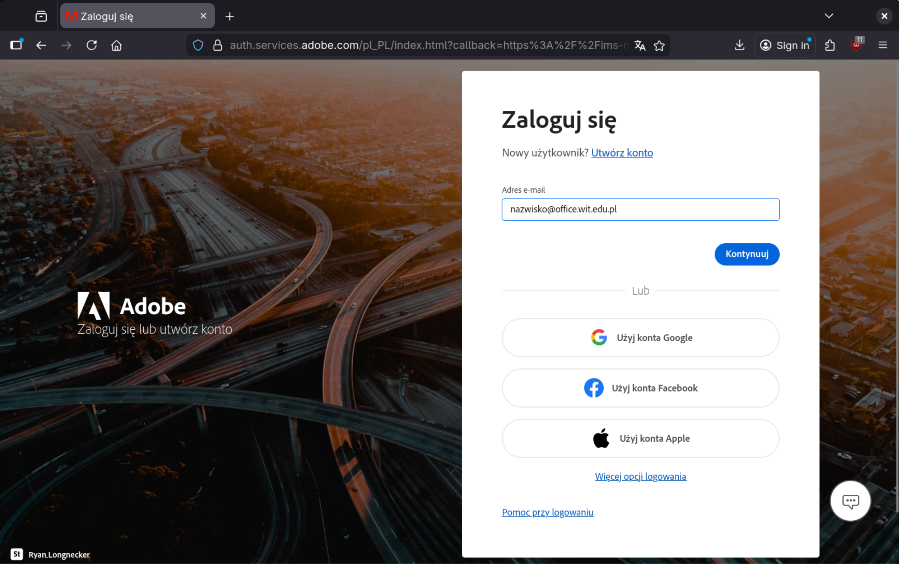
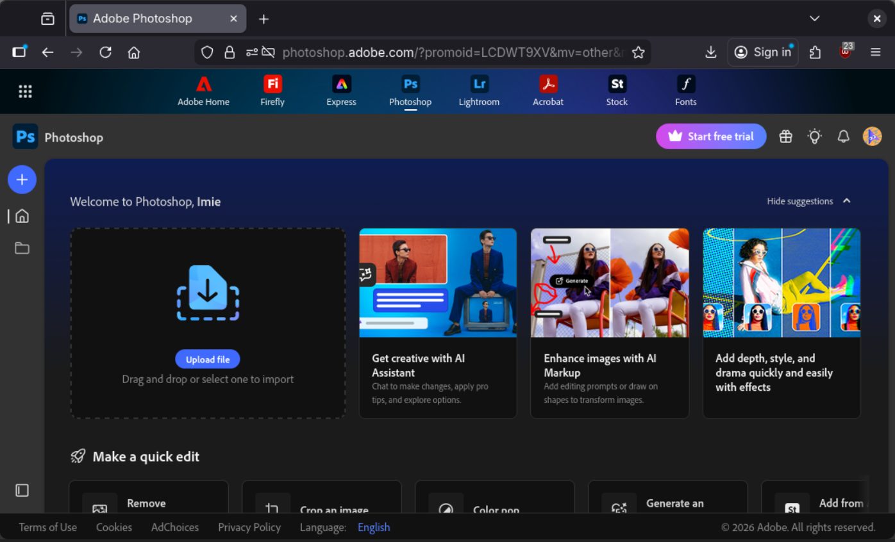
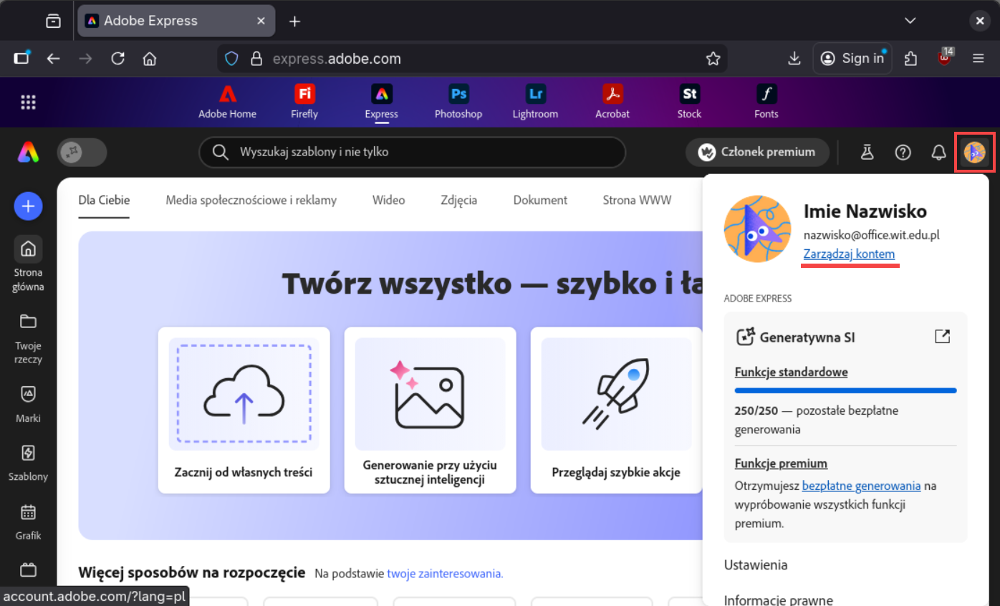
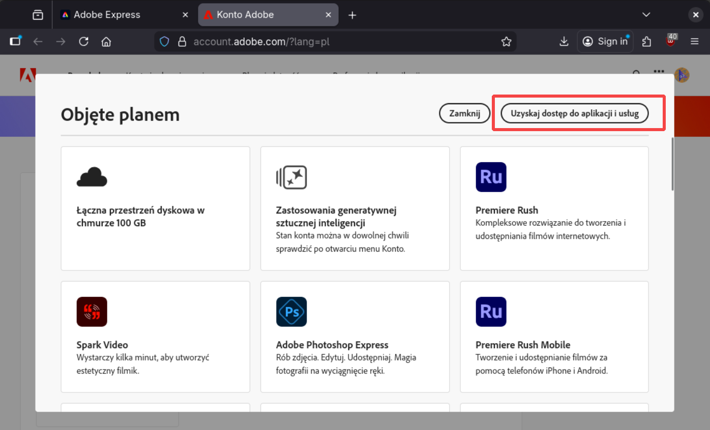
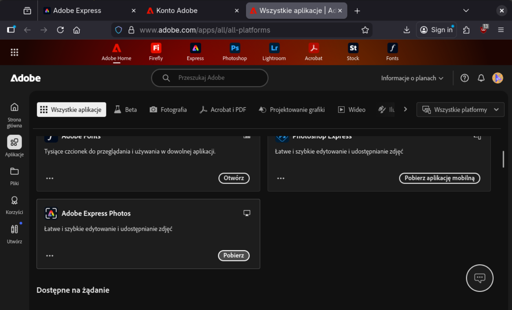
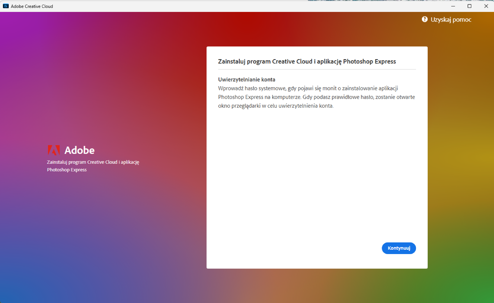
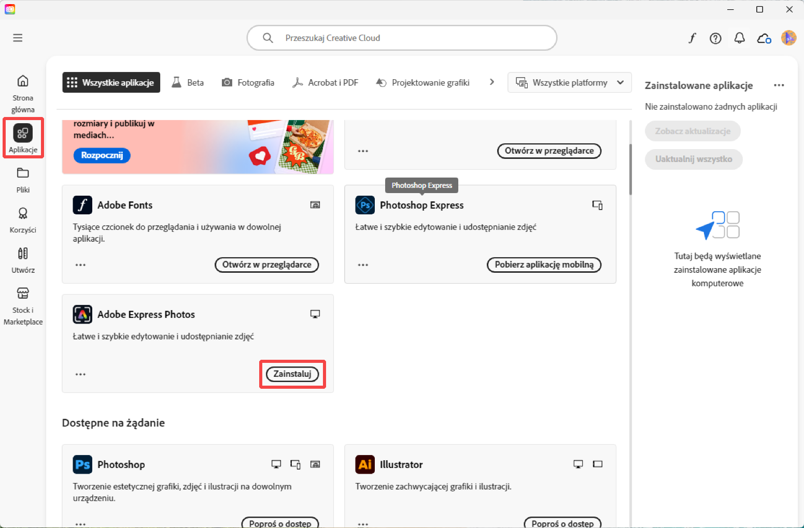

Zdalny pulpit
Dostęp do programów i usług Adobe
Studenci Akademii WIT mają dostęp do programów Adobe używanych w realizacji programu. Poniższa instrukcja pokazuje proces logowania na zapewnione przez uczelnię konto Adobe oraz dostęp do programów.
-
Zaloguj się na stronie internetowej
Adobe
-
Adres e-mail:
Użyj adresu
e-mail do usług Office -
nazwisko@office.wit.edu.pl - Hasło: Twoje hasło systemowe UBI.
- Ważne - hasło należy zmieniać tylko w UBI

-
Adres e-mail:
Użyj adresu
e-mail do usług Office -
- Po podaniu adresu e-mail, ponieważ logujesz się przez konto Microsoft, nastąpi
przekierowanie, podaj hasło systemowe UBI.

-
Po zalogowaniu, masz dostęp do programów w wersji web przez skróty u góry
strony.
Dalsza część instrukcji pokaże jak znaleźć listę wszystkich dostępnych programów i usług, a także jak zainstalować aplikację Adobe Creative Cloud, w której możesz pobierać programy i korzystać z dostępnych usług Adobe.

-
Naciśnij profil w prawym górnym rogu i wybierz "Zarządzaj kontem".

-
Na stronie konta wybierz "Wyświetl wszystkie aplikacje i usługi".

-
Następnie kliknij "Uzyskaj dostęp do aplikacji i usług".

-
Tutaj możesz pobrać dowolną aplikację, wybór nie ma znaczenia, gdyż zainstaluje
się aplikacja Adobe Creative Cloud, w której wybieramy pożądane programy.

-
Po pobraniu uruchom instalator.

-
Automatycznie otworzy się w przeglądarce okno,
które może poprosić cię o zalogowanie,
proces jest taki sam jak na początku instrukcji. Instalacja może trochę potrwać.

-
Po instalacji, program Creative Cloud powinien automatycznie się uruchomić,
w przeciwnym razie uruchom go ręcznie. W sekcji Aplikacje, możesz zainstalować
aplikacje dostępne w obrębie twojej licencji.

Możliwe obejścia tego problemu to:
-
System Windows na dysku zewnętrznym
- Najprostsze i najbezpieczniejsze rozwiązanie.
-
Dualboot
- Wydzielenie partycji na dysku komputera i zainstalowanie na niej systemu Windows
- Najbardziej wydajne, ale wymaga ostrożności
-
Emulacja/Wirtualizacja
- Maszyna wirtualna, emulator lub warstwa kompatybilności np. Wine
- Mogą występować problemy z wydajnością
- Implementacja może być skomplikowana i różnić się w zależności od dystrybucji
- Uruchom aplikację RD Client (Microsoft Remote Desktop) —
dostępna w Google Play

- Dodaj nowe połączenie (ikona „+” / Dodaj)

- Wprowadź dane:
- PC name:
alexander.wsisiz.edu.pl - User name: Twój uczelniany login
- Password: hasło systemowe

- PC name:
- Zapisz ustawienia (Done)

- Wybierz połączenie z listy, aby połączyć
się z „alexandrem”

- Połączenie zostanie nawiązane


Alexander
Alexander to komputer z usługami terminalowymi Windows. Dostęp przez RDP (Remote Desktop Protocol).
- Wniosek o konto RDP: wyślij prośbę na adres konta@wit.edu.pl
- Komputer (host):
alexander.wsisiz.edu.pl - Nazwa użytkownika: twój_login
- Domena:
WSISIZ.EDU.PL
Platinium
Platinium to komputer z usługami terminalowymi Windows. Dostęp przez RDP wyłącznie dla pracowników WIT.
- Komputer (host):
platinium.wsisiz.edu.pl - Nazwa użytkownika: twój_login
- Domena:
WSISIZ.EDU.PL
Uwaga: Podczas logowania używaj formatu WSISIZ.EDU.PL\login tam, gdzie klient RDP prosi o nazwę użytkownika z domeną.